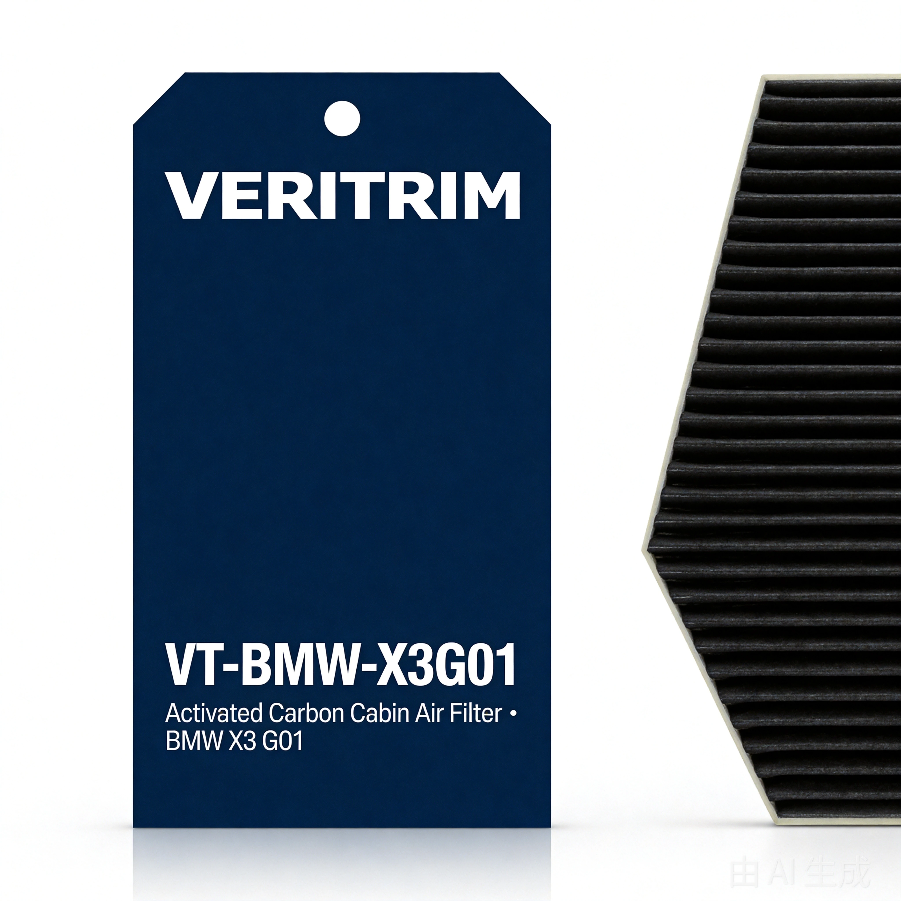

BMW X3 (G01) Cabin Air Filter — Activated Carbon
A direct-fit cabin filter for the 2018–2024 BMW X3 (G01). It replaces the OEM cabin filter 64-11-5-BA6-609 and sits behind the glove box.
$29.99 CAD
Our Amazon listing is still being set up. This button searches Amazon for the equivalent part for now; it will point straight at our own listing page once it is live.
Fitment verification in progress
Fitment verification in progress
We have not yet completed a check on a physical vehicle. The scope below comes from the BMW OEM part catalogue and our own part specifications — not from a car we have had our hands on. We will mark this page verified the day it is.
What it fits
Every entry below is the filter for that generation. Where we have not checked the fit on a vehicle, we say so.
BMW X3 (G01)
2018–2024 · all G01 trims use the same cabin filter
What it does not fit
- •BMW X3 G45 (2024 and newer) — a different cabin filter part number (64-11-5-A56-378), so this one will not go in.
- •Any BMW model other than the X3 G01 — we have no confirmed fit for those yet.
- •If the part number printed on your old filter is not 64-11-5-BA6-609 (or the earlier 64119382886), stop here and send us the number instead of ordering.
Specifications
What we can state today. Anything still being checked is marked as such.
Product type
Cabin air filter — HVAC, cabin side
Media grade
Activated carbon
OEM reference
64-11-5-BA6-609 (supersedes 64119382886)
Installation position
Behind the glove box
Airflow direction
Arrow printed on the frame, pointing down — match it to your old filter
In the box
1 cabin air filter + bilingual (English / French) installation guide
Dimensions
Not published yet. We publish dimensions only after we have measured the part we actually ship.
Fitment status
Verification in progress — no vehicle check completed
How to install it
About ten minutes, no tools. Every G01 uses the same housing.
- 1
Open the glove box
Reach up under the dashboard and release the two clips that hold the glove box, then let it drop down.
- 2
Take off the filter cover
The cabin filter sits in a housing just behind the glove box. Slide the cover off its rails.
- 3
Pull out the old filter
Note which way the arrow on the old filter points before you take it out — that is the way the new one has to go in.
- 4
Slide the new filter in
Push it in along the same rails until it sits flat. Do not force it; if it will not seat, the orientation is wrong.
- 5
Put everything back
Refit the cover, push the glove box back up and click the two clips closed.
- The arrow points down on the G01 — it marks the direction air has to travel, towards the blower.
- One filter per vehicle. This is not a two-piece cabin filter.
- Never run the blower with the housing cover off — unfiltered air goes straight into the cabin.
- Do not wash the filter. Water destroys the activated carbon layer and the media will not recover.
- If it does not slide in smoothly, do not force it. Check the orientation and check the part number on your old filter.
When to replace it
A cabin filter is a cheap part that does an expensive job. Change it on schedule.
Every 12 months
Replace at least once a year, or at every oil service — whichever comes first.
Sooner in bad conditions
Dusty roads, heavy pollen, coastal salt air or stop-and-go traffic: change it before the year is up.
When the airflow drops
Weak airflow at the vents, a musty smell when the air conditioning starts, or a windscreen that will not clear quickly — all signs it is time.
How we verify this filter
- The part reference is taken from the BMW OEM catalogue, not from a guess — we publish the number that is printed on the filter we replace.
- The filter is built to the OEM housing specification, with a full-perimeter seal around the frame so air cannot bypass the edge.
- A fitment check on a physical vehicle is still outstanding. That is the one item missing, and we will say so on this page until it is done.
Other filters in the range
The same rules apply to every part we publish.